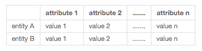
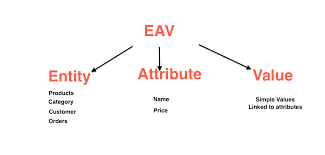
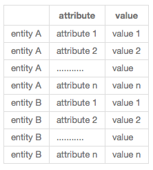

Mô tả phương pháp thiết kế cơ sở dữ liệu chung
Mô hình cơ sở dữ liệu truyên thống
Như chúng ta đã biết mô hình cơ sở dữ liệu truyền thống thì đơn giản, dễ hiểu, trực quan, dễ code, dễ bảo trì. Nhưng nhược điểm cứng nhắc, khó mở rộng khi thêm đối tượng mới lại phải thêm bảng + code bổ xung. không phù hợp với hệ thống bán hàng. ,
Mô hình cơ sở dữ liệu EAV (Entity - Attribute - Value)
, Để khắc phục nhược điểm trên Mô hình cơ sở dữ liệu EAV ra đời.
EAV là mô hình cơ sở dữ liệu đối lập với cơ sở dũ liệu thường, thay vì các Attribute được chèn theo cột thì EAV chèn theo dòng. Nó rất thích hợp trong thiết kế cơ sở dữ liệu động vd: hệ thống bán hàng các siêu thị. Bài dưới dây chúng tôi làm một ví dụ đơn giản hệ thống quản lý sản phẩm cho một siêu thị.
,